第十章 其他算法
分块、莫队、CDQ、树上启发式合并、表达式求值，这些不在前面章节里的通用技巧都收在这里。
离散化算法实例讲解
- 问题：值的范围极大（如 1e9）但个数很少（如 1e5），无法直接开数组做下标。
- 做法：排序 → 去重 → 用
lower_bound把原值替换成“排名”，得到 1..k 的紧凑下标。 - 复杂度
O(n log n)，之后所有依赖下标的数据结构（树状数组、线段树、桶）都能正常使用。 - 关键点：只关心相对大小/顺序的问题才能离散化；涉及“值本身参与运算（如求和、差值）”时不可替换原值。
- 常与“前缀和/树状数组求逆序对/区间覆盖”配合。
vector<int> v(a, a + n);
sort(v.begin(), v.end()); v.erase(unique(v.begin(), v.end()), v.end());
for (int i = 0; i < n; ++i)
a[i] = lower_bound(v.begin(), v.end(), a[i]) - v.begin() + 1;常用的双指针技巧
- 思想：用两个下标同向或相向移动，把
O(n²)的枚举降为O(n)，前提是单调性（移动方向不回退）。 - 四种典型形态：
- 同向快慢指针：快指针探索、慢指针维护窗口（滑动窗口、去重、链表判环）；
- 相向指针：有序数组的两数之和、反转字符串、回文判定；
- 对撞指针 + 排序：三数之和（固定一个 + 双指针）；
- 归并式双指针：合并两个有序数组、求交集。
- 滑动窗口模板：右指针扩张直到不满足条件，左指针收缩直到重新满足，过程中更新答案。
- 注意：双指针一般要求数组有序或答案具有单调性，否则需要用数据结构（如单调队列/哈希）维护。
// 长度最小的子数组：和 ≥ target
int l = 0, sum = 0, ans = INT_MAX;
for (int r = 0; r < n; ++r) {
sum += a[r];
while (sum >= target) { ans = min(ans, r - l + 1); sum -= a[l++]; }
}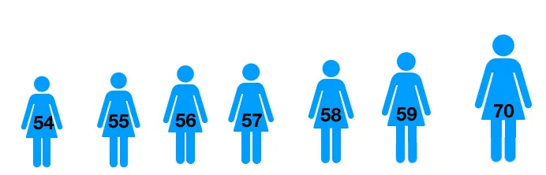
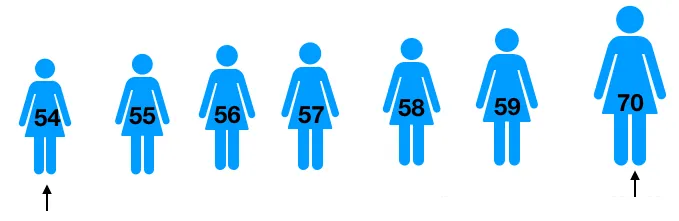
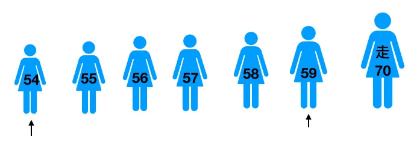
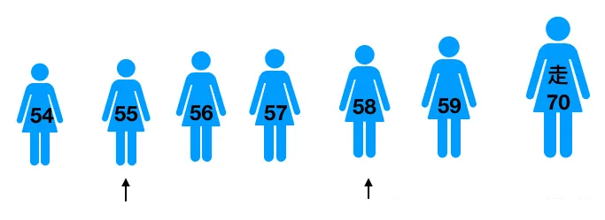
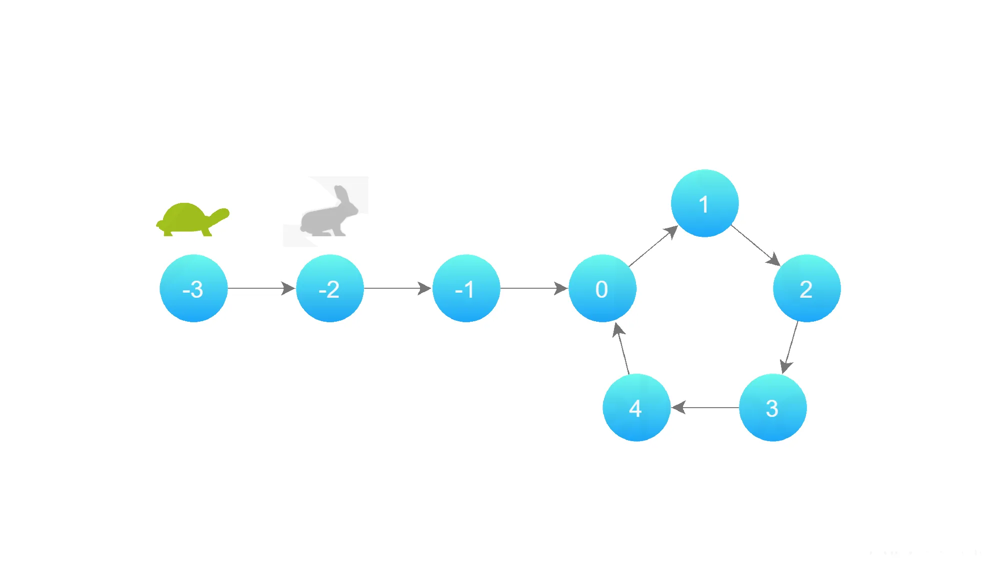
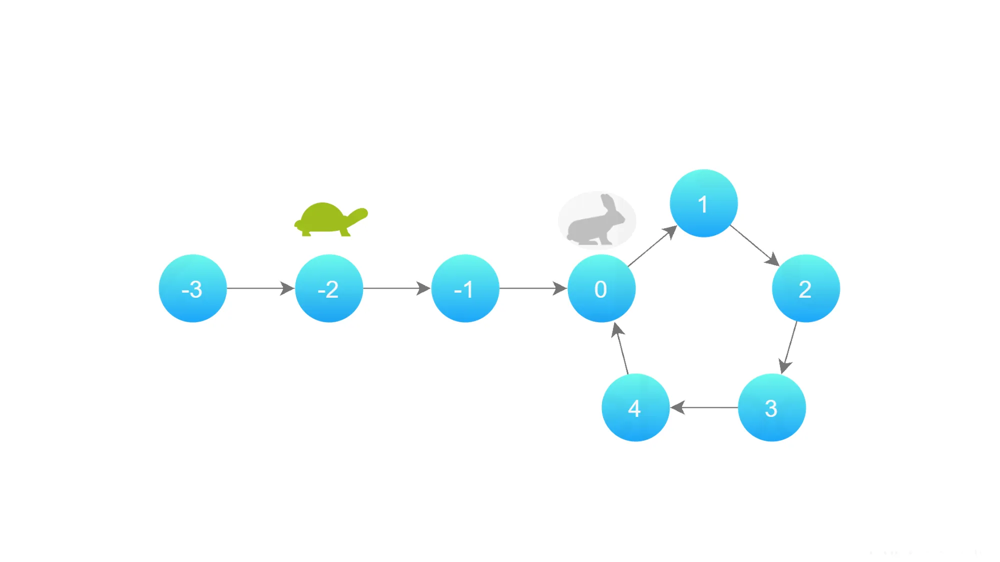
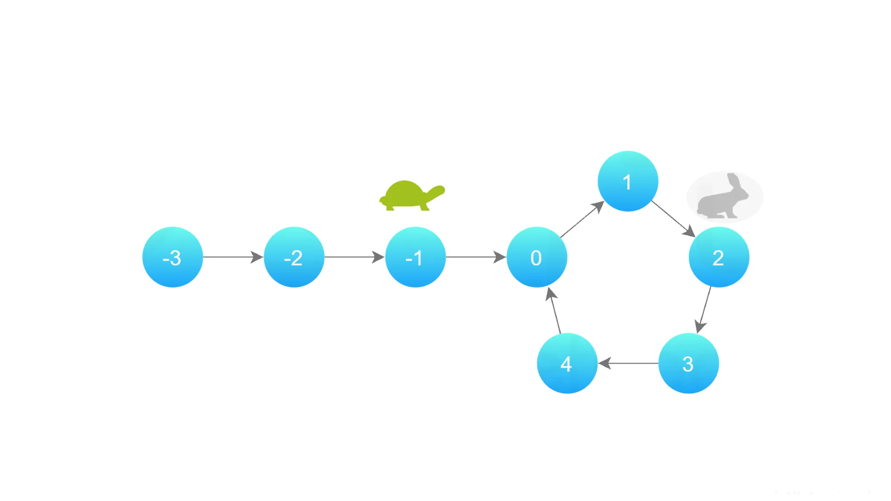
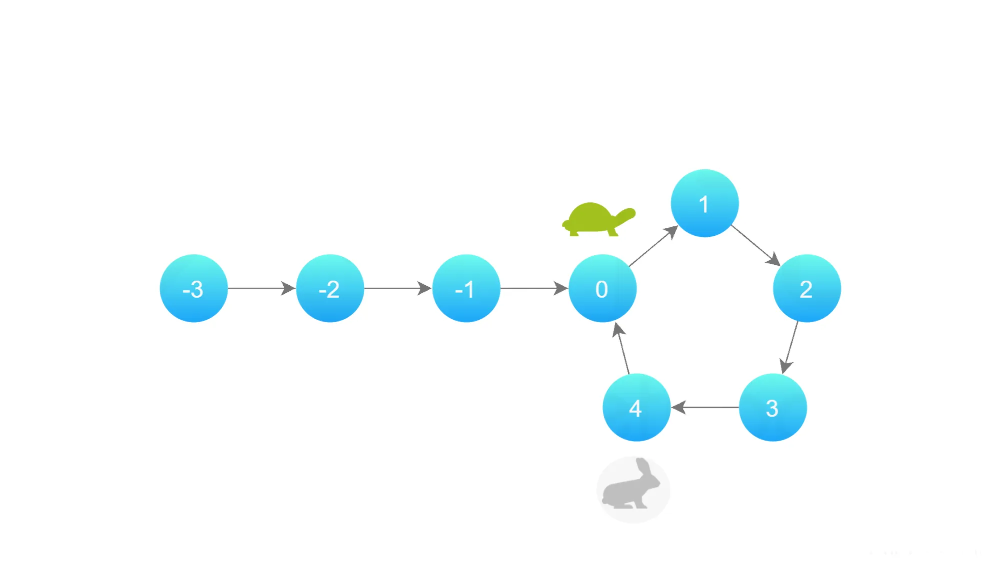
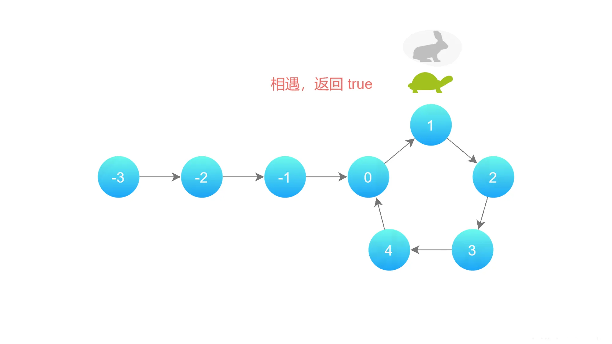
在线算法和离线算法的区别
- 在线算法：输入逐个到达，必须立即给出当前答案，不能等全部数据到齐（如交互题、动态查询）。
- 离线算法：先读入全部数据，重新排序/分块后统一处理，最后按原顺序输出（如莫队、CDQ 分治、扫描线）。
- 对比：
- 在线受“不可预知后续”限制，常用数据结构（线段树/平衡树/树状数组）支撑；
- 离线可自由排序，常用分块、排序 + 双指针、时间分治，常数更小、思路更灵活。
- 典型例子：区间不同数个数——在线用主席树，离线用“按右端点排序 + 树状数组”。
- 注意：离线算法输出时要恢复原始顺序（记录查询编号）。
浅谈分数规划
- 问题形如：选一组元素使
Σa_i / Σb_i最大（或最小），a、b 为收益与代价。 - 方法：二分答案
mid，判定是否存在方案使Σa_i - mid·Σb_i ≥ 0；把权值改成a_i - mid·b_i后用 DP/贪心/最大流求最优。 - 单调性：
mid越大越难满足，因此可以二分；答案是满足条件的最大值。 - 整数情形可用 Dinkelbach 迭代（比二分快）：每次用当前最优比值更新，迭代若干次收敛。
- 精度：二分 50~100 次或
while (r - l > 1e-6)；输出按题目要求保留位数。 - 典型题：最优比率环（二分 + SPFA 判正环）、最大密度子图（最大权闭合子图 + 二分）。
double l = 0, r = 1e9;
for (int it = 0; it < 100; ++it) {
double mid = (l + r) / 2;
if (check(mid)) l = mid; else r = mid; // check：Σ(a - mid*b) 能否 ≥ 0
}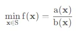
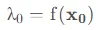
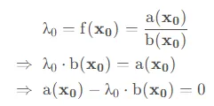
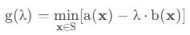
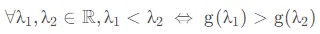
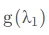
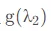
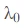
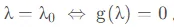
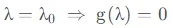
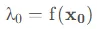
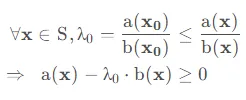
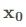
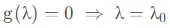
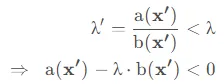
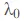
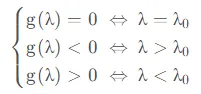
简述随机化算法
- 思想：用随机数引导搜索/判定，牺牲“确定性”换速度与实现简单；结果有一定概率出错，需控制错误率。
- 常见类型：
- 随机化贪心/爬山法：随机扰动当前解，变好就接受（易陷局部最优）；
- 模拟退火（SA）：以
exp(-Δ/T)的概率接受变差的解，温度 T 逐渐降低，跳出局部最优； - 遗传算法：种群 + 交叉 + 变异；
- 随机抽样/随机哈希：用随机权值降低被构造数据卡死的风险（如树哈希、字符串哈希）。
- 竞赛实用场景：
- 正确性难保证但能“骗分”（输出近似解）；
- 破坏数据的最坏结构（随机打乱输入，规避有序数据导致的退化）；
- 判定类（Miller-Rabin 素性测试、Pollard-Rho 分解）。
- 注意：交互/评测环境要固定随机种子（或使用固定种子的
mt19937）保证可复现。
mt19937 rng(chrono::steady_clock::now().time_since_epoch().count());
shuffle(a, a + n, rng); // 防退化
// 模拟退火：接受概率 exp(-(new-old)/T)悬线法实例讲解
- 用途：在带障碍的矩阵中求最大全 1 子矩形（或最大正方形），复杂度
O(nm)。 - 三个数组：
up[i][j]：从 (i,j) 向上能延伸的全 1 高度；left[i][j]/right[i][j]：在当前高度范围内，能扩展到的最左/最右列。- 转移：若
a[i][j] == 1，up = up[i-1][j] + 1；left = max(left[i-1][j], 当前行左侧边界)；right同理取 min。 - 答案：
max( (right-left+1) * up )；求最大正方形则取min(宽, 高)的平方。 - 与“单调栈求柱状图最大矩形”的关系：两者都是“按行累积高度 + 维护左右边界”，悬线法更通用（支持障碍）。
for (int i = 1; i <= n; ++i) {
int curL = 1, curR = m;
for (int j = 1; j <= m; ++j)
if (a[i][j]) left[i][j] = max(left[i-1][j], curL); else curL = j + 1, left[i][j] = 1;
for (int j = m; j >= 1; --j)
if (a[i][j]) right[i][j] = min(right[i-1][j], curR); else curR = j - 1, right[i][j] = m;
for (int j = 1; j <= m; ++j)
if (a[i][j]) up[i][j] = up[i-1][j] + 1,
ans = max(ans, (right[i][j] - left[i][j] + 1) * up[i][j]);
}
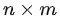
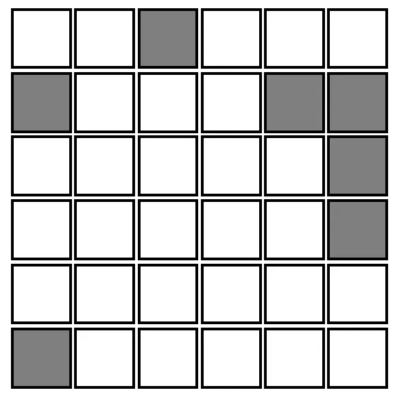
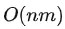
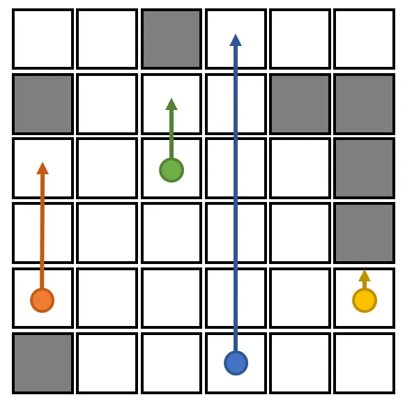
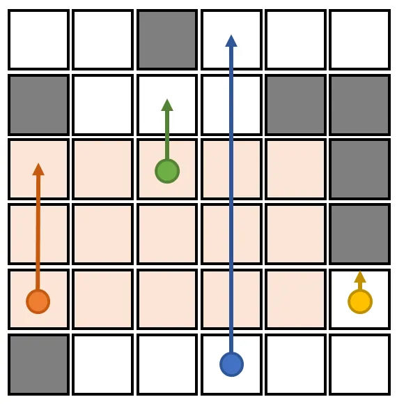

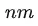
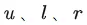
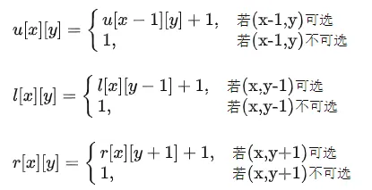
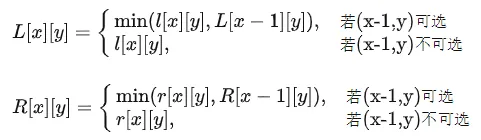
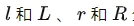
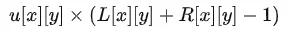
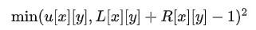
什么是字节顺序？
- 定义：多字节数据在内存中的存放顺序。
- 小端（Little-Endian）：低位字节放在低地址（x86/ARM 常用）；
- 大端（Big-Endian）：高位字节放在低地址（网络字节序、部分嵌入式）。
- 例：
0x12345678存到地址 0 起——小端为78 56 34 12，大端为12 34 56 78。 - 影响：
- 跨平台二进制文件/网络传输必须统一字节序（网络用大端，即
htons/htonl）； - 位运算、联合体（union）读取、序列化/反序列化时要格外注意；
- 直接 memcpy 结构体在不同端序机器间会读错。
- 判定本机端序：写
int x = 1;看最低地址的那个字节是否为 1。
bool isLittleEndian() {
union { int i; char c[4]; } u; u.i = 1;
return u.c[0] == 1; // 小端：低地址存最低字节
}- 竞赛中出现场景：位运算题、模拟位图存储、读入特殊格式数据。
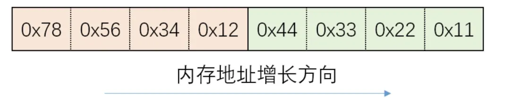
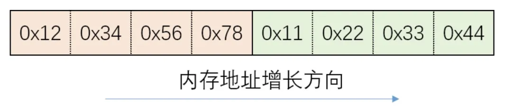
浅谈约瑟夫问题
- 问题：n 个人围成环，从 1 开始报数，报到 m 的人出列，下一人重新从 1 报，求最后剩下的人（或出列顺序）。
- 朴素模拟：链表/队列 O(nm)，n 小时可用。
- 递推解法（求最后存活者）：
J(1) = 0，J(n) = (J(n-1) + m) mod n，结果为J(n) + 1（0 基编号）。
int josephus(int n, int m) {
int ans = 0; // 0 基
for (int i = 2; i <= n; ++i) ans = (ans + m) % i;
return ans + 1; // 1 基
}- 复杂度
O(n)，内存 O(1)；若要输出完整出列顺序，仍需模拟（或用树状数组/线段树按“当前剩余人数”定位，O(n log n)）。 - 变体：m 固定为 2（二进制规律：最高位之外左移一位）；k 步长可变、双向报数。
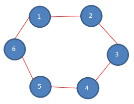
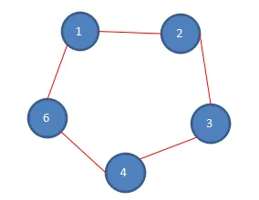
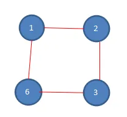
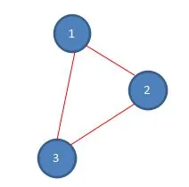
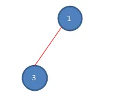
什么是格雷码？
- 定义：一种二进制编码，相邻两个数只有一位不同，用于减少状态切换时的错误（如旋转编码器）。
- 生成规律：
g(i) = i ^ (i >> 1)（i 为 0..2ⁿ-1）。 - 反变换（格雷码 → 原码）：
b = g; while (g >>= 1) b ^= g;。 - 性质：首尾也只差一位（循环格雷码），是 n 维立方体的哈密顿回路。
- 应用：状态压缩枚举（相邻状态只差一位）、位图/编码器、九连环、汉诺塔状态映射。
int gray(int i) { return i ^ (i >> 1); }
int ungray(int g) { int b = g; while (g >>= 1) b ^= g; return b; }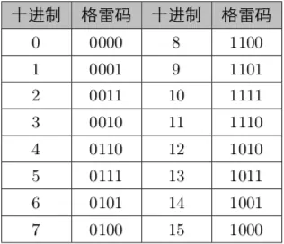
浅谈表达式求值
- 三类表达式：中缀（人读）、前缀（波兰式，运算符在前）、后缀（逆波兰式，运算符在后，无括号）。
- 双栈法（中缀直接求值）：一个数字栈、一个符号栈；遇数字入数栈；遇运算符按优先级弹出计算；遇括号递归/特判。
- 转后缀再求值：用调度场算法（Shunting-yard）转成后缀，再用一个栈顺序计算，逻辑最清晰。
- 递归下降：按文法
expr := term {(+|-) term}、term := factor {(*|/) factor}写递归，天然支持括号与优先级。 - 细节：一元负号、多位数字、除法取整方向、乘方右结合、错误表达式处理。
- 复杂度 O(n)。
// 后缀表达式求值
stack<long long> st;
for (auto &tk : rpn) {
if (isNum(tk)) st.push(stoll(tk));
else {
long long b = st.top(); st.pop();
long long a = st.top(); st.pop();
st.push(calc(a, b, tk)); // 注意顺序：a 是左操作数，b 是右操作数
}
}
return st.top();浅析Garsia-Wachs算法
- 用途：在线性时间内构造最优二叉查找树与字母霍夫曼码（alphabetic code，要求叶子必须按原顺序排列，不能像普通哈夫曼那样自由组合）。
- 三个阶段：
1. 先构造一棵“值位于叶子、但叶子顺序可能是错的”的二叉树； 2. 计算根到每个叶子的深度； 3. 按深度重新排出一棵“叶子深度相同、但顺序正确”的树——由第三阶段的结论（存在同深度的正确排序树且最优）可知结果最优。
- 第一阶段的规则（原文描述）：在序列两端各加一个足够大的标记值（sentinel），然后重复：
- 找到前三个连续权重
x, y, z满足x ≤ z（因结尾标记值足够大，这样的三元组一定存在）； - 删除 x、y，建一个新结点（父结点，值为
x + y）； - 把新结点插回“原来 x 的位置之后、第一个大于或等于
x + y的值的最右边”。 - 每步序列长度减一，直到只剩一棵包含所有叶子的树；叶子的深度即编码长度。
- 实现：用平衡二叉查找树维护当前序列；位于偶数位、奇数位的权重各自构成递减序列，因此可用两次二分找到插入位置；三元组搜索从上一次的位置线性推进 ⇒ 总复杂度 O(n)（最坏写法用平衡树为 O(n log n)）。
- 竞赛关联：它与“只能相邻合并”的合并类问题（石子合并型）是同一模型，比区间 DP 的
O(n³)、四边形不等式优化的O(n²)更快，理解它有助于理解区间 DP 的决策单调性。
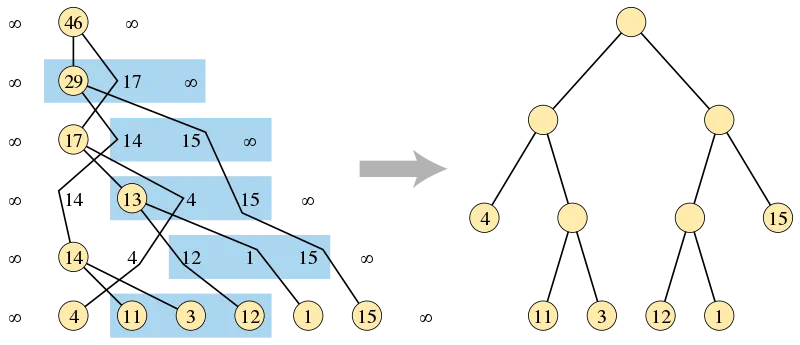
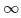
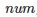
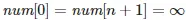